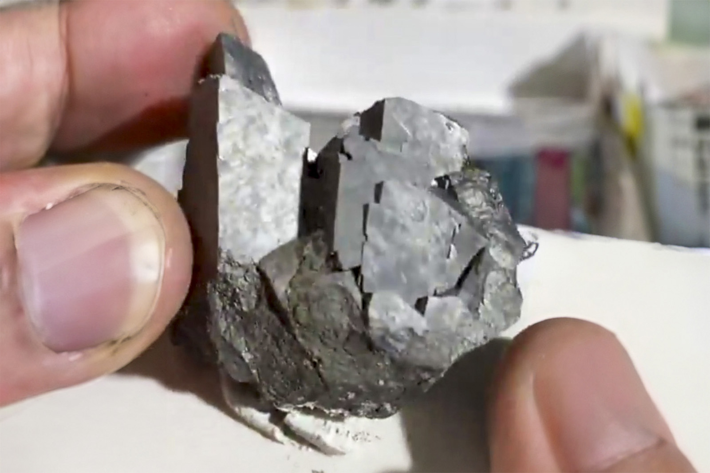

Arsenopyrite
"Long and tall Arsenopyrite Crystal Cluster"
II-10462
Yaogangxian Mine, Yaogangxian W-Sn ore field, Yizhang Co., Chenzhou, Hunan, China
Purchased 5/29/2026 from Dean Lagerwall Minerals for $28.00
Core Collection • In Collection
Details
Storage Type: Drawer
Storage Location: C2D3 Worldwide Miniatures
Size class: Cabinet (0)
Dimensions: Unrecorded
Mass: Unrecorded
Luster: Unrecorded